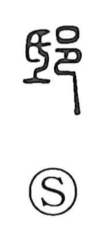

邸

Uncategorized
Kun: yashiki | On: tei
mansion ・ residence
Explanation
邸 is a phono-semantic character. The phonetic element 氐 (tei) originally depicts shaving a base flat with a small handled blade, and supplies the reading. As the Shuowen notes, the word first referred to a state-owned building—specifically the quarters provided in the capital for visiting feudal lords. The compound 邸閣 initially named government storehouses for grain, and the sense later broadened to a private dwelling and, by extension, a grand residence or palatial mansion (as in gotei).